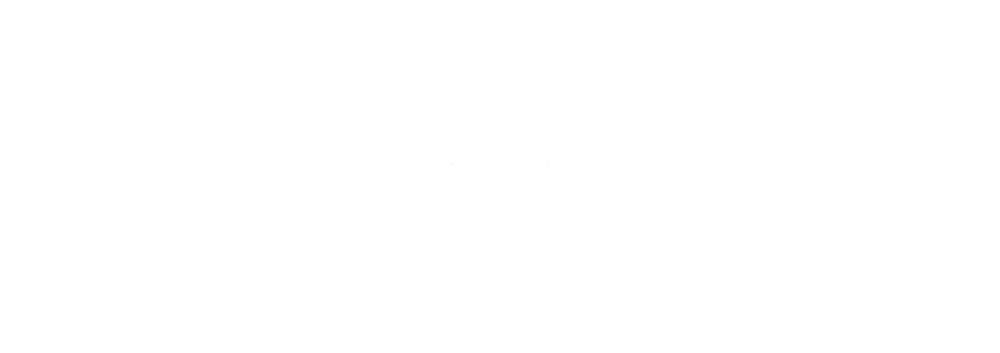
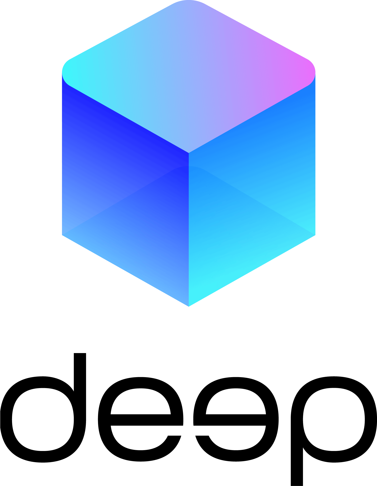
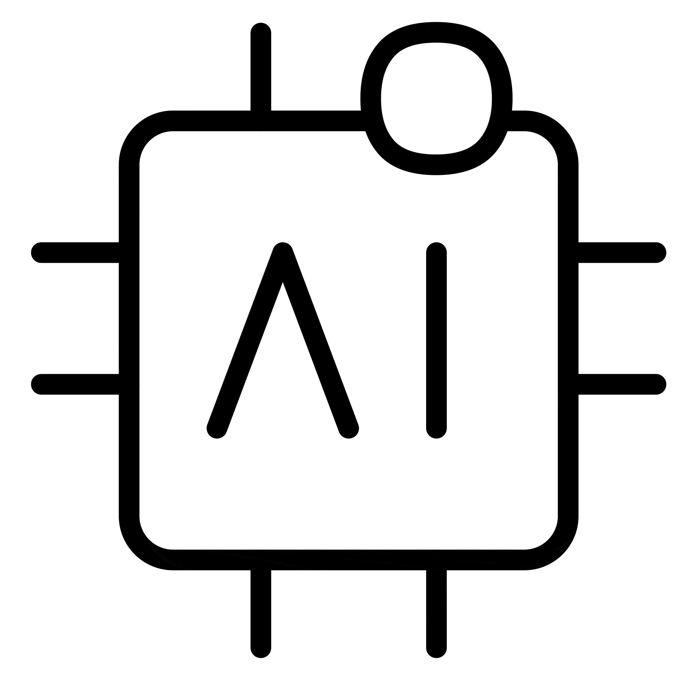
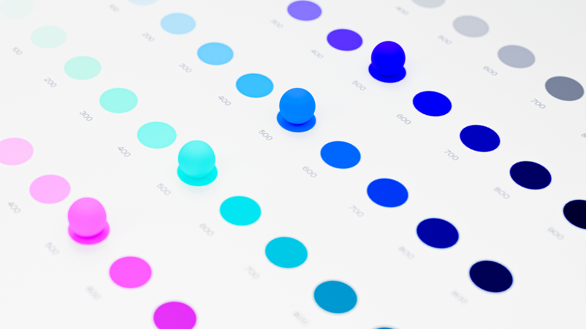
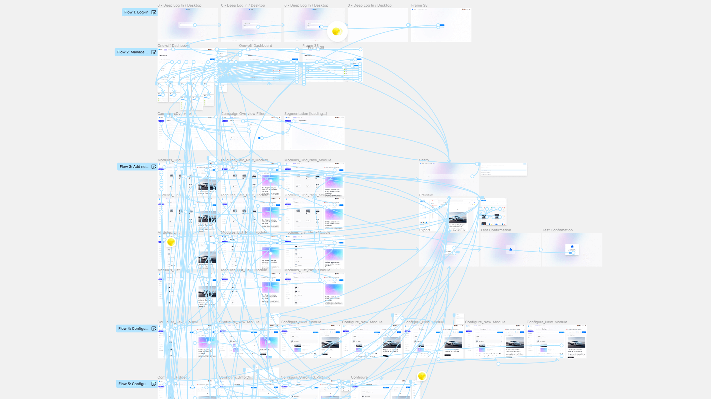
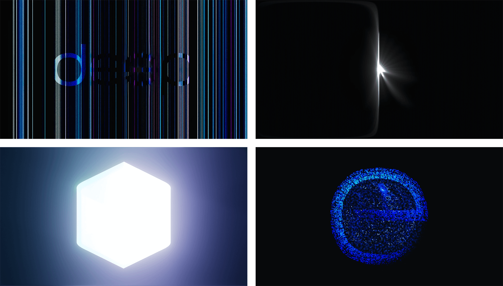
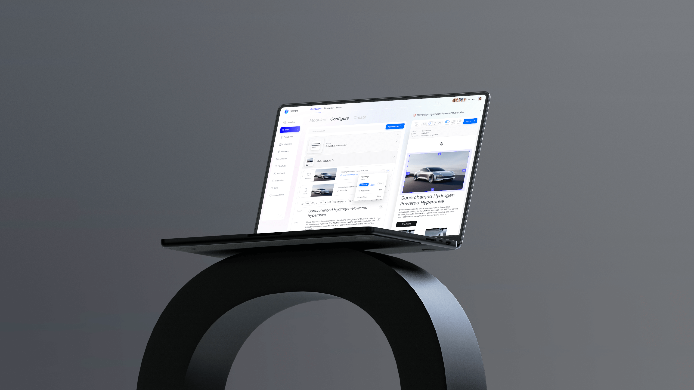

<!DOCTYPE html>
<html lang="en-US">

<head>
	<title>Case study: Deep</title>
	<meta charset="UTF-8">
	<meta name="viewport" content="width=device-width, initial-scale=1.0, maximum-scale=1.0, user-scalable=0">
	<link rel='stylesheet' id='wp-block-library-css'  href='wp-includes/css/dist/block-library/style.min923e.css?ver=5.4.10' type='text/css' media='all' />

	<link rel='stylesheet' id='smooth-css'  href='wp-content/themes/smooth/style.css?ver=1.0.0' type='text/css' media='all' />

	<link rel="preconnect" href="https://fonts.googleapis.com">

	<link rel="preconnect" href="https://fonts.gstatic.com" crossorigin>

	<link href="https://fonts.googleapis.com/css2?family=Instrument+Sans&display=swap" rel="stylesheet">

	<script type='text/javascript' src='wp-content/themes/smooth/js/jquery-3.5.1.min923e.js?ver=5.4.10'></script>
	<script type='text/javascript' src='wp-content/themes/smooth/js/f.min0ba6.js?ver=1.0.6'></script>

<style type="text/css">


body main aside.cover:before {
    content: '';
    position: absolute;
    top: 0;
    left: 0;
    width: 100%;
    height: 100%;
    background: rgba(255, 255, 255, 0) url("assets/deep_white_logotype.svg") no-repeat center center !important;
		backdrop-filter: blur(40px);
    background-size: 72%;
    z-index: 2;
    -webkit-transition: opacity 0.4s ease-out;
    -moz-transition: opacity 0.4s ease-out;
    -ms-transition: opacity 0.4s ease-out;
    -o-transition: opacity 0.4s ease-out;
    transition: opacity 0.4s ease-out;
}

@media screen and (max-width: 680px) {

  body main aside.cover:before {
      background: rgba(255, 255, 255, 0.4) url("assets/deep_white_logotype_small.svg") no-repeat center center !important;
  }}
</style>

</head>

<body>

<main>


		<!--<aside class="cover active" style="background:#D3D9D9;">
			<video autoplay loop muted playsinline class="bottom-center">
				<source src="assets/Background_Nologo.mp4" type="video/mp4">
			</video>
		</aside>-->


		<aside class="projects">

			<nav>
				<a href="#" data-title="Deep" class="medium active" data-color="rgba(21, 22, 25, 1)" id="intro">
					<span style="--ratio: 56.25%">
						<video autoplay loop muted playsinline preload="meta">
							<source src="assets/Background_Logo_2.mp4" type="video/mp4">
						</video>
					</span>

					<table>
					  <tbody>
							<tr>
					      <td id="project-cat"><p id="Grey">YEAR</p></td>
					      <td><p id="project-informations">2023</p></td>
					    </tr>
							<tr>
					      <td id="project-cat"><p id="Grey">CLIENT</p></td>
					      <td><p id="project-informations">DEEP</p></td>
					    </tr>
						  <tr>
					      <td id="project-cat"><p id="Grey">ROLE</p></td>
					      <td><div class="project-details-2">
									<p class="tag">Visual Identity</p>
									<p class="tag">Typography</p>
									<p class="tag">Product Design</p>
									<p class="tag">User Interface</p>
									<p class="tag">3D Motion</p>
								</div></td>
					    </tr>
						</tbody>
					</table>

					<h2  class="project-details" id="project-informations">
						Deep is a company dedicated to enhancing the way businesses connect with people, streamlining journeys across paid and owned media. In 2020, I was responsible for designing Deep's brand identity and creating the user interface for the core product. In 2023, I expanded and improved the design system, revitalised the user interface, and created a brand resource center.
					</h2>
				</a>

						<a href="#" data-title="Logotype" class="large" data-color="#f7f7f7"  >
							<span  id="large-opener" style="--ratio: 66.6797%">
								
						</span>
						</a>

						<a href="#" data-title="Text" class="large" data-color="#0070ff">
							<span style="--ratio: 26.6797%">
								<h2  class="project-details" id="project-informations">
									The project kicked off with the design of the distinctive logotype, Deep Sans.
									<br>&nbsp<br>
									Through rounded edges and low-contrast strokes the type evokes an approachable, digital presence. Accentuating the symmetrical name, the second e was horizontally mirrored, creating a central focal point where the finials of both 'e's appear to extend into the depths of the digital dimension →
								</h2>
							</span>
						</a>

						<a href="#" data-title="Deep Logo" class="large" data-color="rgb(193 193 198/6%)"  >
							<span id="large-opener" style="--ratio: 56.25%">
									</img>
							</span>
						</a>

						<a href="#" data-title="Deep Sans" class="large" data-color="rgb(193 193 198/22.2%)"  >
							<span id="large-opener" style="--ratio: 66.25%">
								</img>
							</span>
						</a>

						<a href="#" data-title="Icons GIF" class="medium" data-color="#0070ff"  >
							<span id="invert" style="--ratio: 26.25%;">
								</img>
							</span>
						</a>

						<a href="#" data-title="Text Block" class="large" data-color="#0070ff">
							<span style="--ratio: 6.6797%">
								<h2  class="project-details" id="project-informations">
									 The logotype was soon extended into a set of glyphs & icons. The brand defining and proprietary forms both provided a foundation for the rest of the visual language and enable Deep to stand out across visual media →
								</h2>
							</span>
						</a>

						<a href="#" data-title="Icon Overview" class="large" data-color="#0070ff">
							<span style="--ratio: 56.25%" id="x-large-opener">
								</img>
							</span>
						</a>


						<a href="#" data-title="Text Block" class="large" data-color="rgba(102, 102, 255, 1)" >
							<span style="--ratio: 36.6797%">
								<h2  class="project-details" id="project-informations">
									A vivid color system enables Deep to differentiate itself in a field that often opts for blue. The system clearly seperates brand colors from typical feedback colors.
								</h2>
							</span>
						</a>

						<a href="#" data-title="Isometric color" class="large" data-color="rgba(63, 63, 255, 1)"   >
							<span style="--ratio: 56.25%" id="large-opener">
								</img>
							</span>
						</a>

						<a href="#" data-title="Brand Colors" class="large" data-color="rgba(255, 255, 255, 1)">
							<span style="--ratio: 56.25%" id="large-opener" >
									<video autoplay loop muted playsinline class="bottom-center">
										<source src="assets/Background_Nologo.mp4" type="video/mp4">
									</video>
							</span>
						</a>


						<a href="#" data-title="Text Block" class="large" data-color="rgba(21, 22, 25, 1)" >
							<span style="--ratio: 6.6797%">
								<h2  class="project-details" id="project-informations">
									The visual identity was unfolded into a design system and eventually a high-fidelity, interactive prototype.
									<br>&nbsp<br>
									Deep’s design system was developed to ensure consistency and alignment with the identity. Containing more than 80 components, 400 variants and states, the system rapidly speeds up product iteration and implementation. The dependency on core identity components, like type, color, icons, grids and scales, also means that a change in identity will automatically be reflected in the product.
								</h2>
							</span>
						</a>

						<a href="#" data-title="Design System" class="large" data-color="rgba(241, 241, 241, 1)">
							<span style="--ratio: 56.25%" id="large-opener">
									<video autoplay loop muted playsinline class="bottom-center">
										<source src="assets/Button.mp4" type="video/mp4">
									</video>
							</span>
						</a>

						<a href="#" data-title="Prototype_Connections" class="large" data-color="rgba(241, 241, 241, 1)">
							<span style="--ratio: 56.25%" id="x-large-opener">
									
									</img>
							</span>
						</a>

						<a href="#" data-title="Micro-interaction" class="medium" data-color="rgba(241, 241, 241, 1)" id="xpad">
							<span style="--ratio: 56.25%">
								<video loop muted playsinline preload="meta">
									<source src="assets/MI_Log-in.mp4" type="video/mp4">
								</video>
							</span>
						</a>

						<a href="#" data-title="Micro-interaction" class="large" data-color="rgba(246, 246, 246, 1)" id="xpad2">
							<span style="--ratio: 56.25%">
								<video loop muted playsinline preload="meta">
									<source src="assets/MI_Padding.mp4" type="video/mp4">
								</video>
							</span>
						</a>

						<a href="#" data-title="Micro-interaction" class="medium" data-color="rgba(251, 251, 251, 1)" id="xpad">
							<span style="--ratio: 56.25%">
								<video loop muted playsinline preload="meta">
									<source src="assets/MI_Dashboard.mp4" type="video/mp4">
								</video>
							</span>
						</a>

						<a href="#" data-title="Micro-interaction" class="large" data-color="rgba(255, 255, 255, 1)" id="xpad2">
							<span style="--ratio: 56.25%">
								<video loop muted playsinline preload="meta">
									<source src="assets/MI_Regenerate.mp4" type="video/mp4">
								</video>
							</span>
						</a>

						<a href="#" data-title="Parallax" class="medium active" data-color="rgba(255, 255, 255, 1)">
							<span style="--ratio: 56.25%" id="x-large-opener">
								<video loop muted playsinline preload="meta">
									<source src="assets/Parallax.mp4" type="video/mp4">
								</video>
							</span>
						</a>


						<a href="#" data-title="Text Block Test" class="large" data-color="rgba(22, 22, 23, 95%)" >
							<span style="--ratio: 56.25%">
								<h2  class="project-details" id="project-informations">
									Following the development of the interactive prototype, I proceeded to produce a 50-second promotional video for internal presentations. Additionally, frames from the video were transformed into editable mockups for use in presentations.
								</h2>
							</span>
						</a>

						<a href="#" data-title="Deep" class="medium active" data-color="rgba(1, 1, 1, 100%)">
							<span style="--ratio: 56.25%" id="x-large-opener">
								<video loop muted playsinline preload="meta">
									<source src="assets/Deep_Short.mp4" type="video/mp4">
								</video>
							</span>
						</a>

						<a href="#" data-title="Frame" class="large" data-color="rgba(21, 22, 25, 1)"   >
							<span style="--ratio: 56.25%" id="x-large-opener">
								</img>
							</span>
						</a>

						<a href="#" data-title="Mockup" class="large" data-color="rgba(21, 22, 25, 0.5)"   >
							<span style="--ratio: 56.25%" id="x-large-opener">
								</img>
							</span>
						</a>

						<a href="#" data-title="Text Block" class="large" data-color="rgba(21, 22, 25, 1)" >
							<span style="--ratio: 26.6797%">
								<h2  class="project-details" id="project-informations">
									The brand resource center and Figma made the handover to the in-house developers frictionless, while the sorrounding promotional materials made it easy for project managers to communicate the identity and UI update.
								</h2>
							</span>
						</a>

			</nav>
		</aside>

		<aside class="index">
			<header>
				<a href="index.html">Close</a>
			</header>
		</aside>

		<aside class="helper"></aside>

	</main>

	<footer>

		<script type='text/javascript' src='wp-includes/js/imagesloaded.min55a0.js?ver=3.2.0'></script>
		<script type='text/javascript' src='wp-includes/js/masonry.mind617.js?ver=3.3.2'></script>
		<script type='text/javascript' src='wp-includes/js/wp-embed.min923e.js?ver=5.4.10'></script>

	</footer>

</body>
</html>
